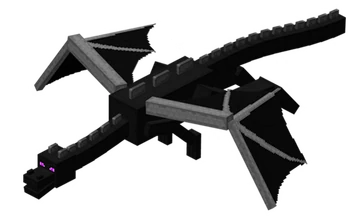

End Mobs
There are primarily three types of mobs in the end: Endermen, the ender dragon, and shulkers.
This is the ender dragon. It is a boss mob that spawns when you first enter this dimension.

End Structures
Structures are naturally generated buildings scattered throughout the world where you can explore and find loot.
This is a pillar found in the end cities. If you get lucky, you’ll find some loot in them!

End Ores
As of now, there are no ores that can be found in the end dimension.
This is end stone. It makes up the land in the end dimension.